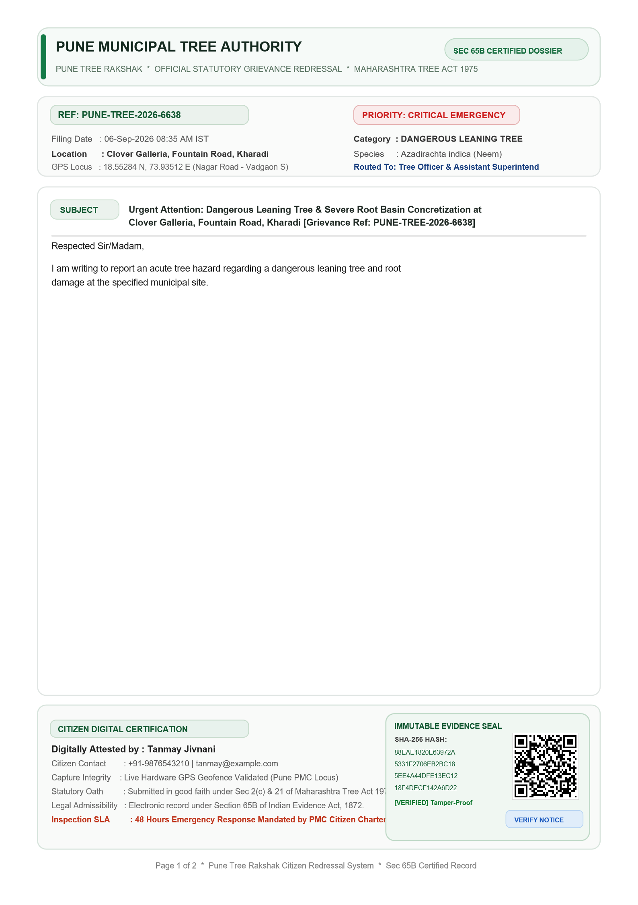

🏆 iQOO HACKATHON 2026 • OPEN INNOVATION TRACK
Pune Tree Rakshak
Phone-First Civic Accountability & Urban Forest Preservation Platform
⚠️ The Problem: Broken Evidence & Ghost Closures
- 4.09M+ Pune Trees: Facing rampant illegal felling, concrete choking & monsoon decay.
- Dismissed as "Vague": Citizens submit un-timestamped photos with no statutory citations.
- "Paper Closures": Municipal portals close tickets without physical site remediation.
- Queue Flooding: Non-tree spam and indoor photos clog municipal emergency response.
🌿 The Solution: Closed-Loop Statutory Platform
- 7 Statutory Categories: Grounded in Maharashtra Tree Act 1975.
- Hardware Sensor Telemetry: Device accelerometer measures tree tilt angle degrees.
- 3-Layer Forensic Standard: Multi-angle capture with AI Anti-Spam Gate.
- PMC 4.09M Tree Census GIS: Attaches official municipal census records within 10m.
- Zero-Trust Re-Audit: Timelock verification + Municipal Commissioner escalation.
📱
LIVE DEMO SYNC:
Show App Launch / Grievance Tracker on your phone. Introduce problem & vision in 30s.
🎙️ Speaker Note (30s): "Judges, over 4 million trees protect Pune's ecology, yet thousands are chopped down or collapse every monsoon. The root cause isn't lack of laws — it's the broken evidence loop. Citizens report vaguely, tickets get closed on paper, and officers lack forensic proof. Today, we demonstrate Pune Tree Rakshak on this iQOO flagship, delivering an end-to-end statutory evidence pipeline from physical camera capture to court-grade legal dispatch."
LIVE DEMO • STEP 1
Intelligent Civic Triage & Sensor Telemetry
App Screen: Category Selection & Real-Time Accelerometer Grounding
🌳 7 Statutory Categories
- Hazardous Leaning / Imminent Fall
- Illegal Felling (Active / Fresh Stump)
- Heavy Unauthorized Pruning
- Snapped / Hanging Broken Limbs
- Root Concretization (NGT Violation)
- Disease & Pest Infestation
- Tree Vandalism (Nails/Boards)
📐 Hardware Sensor Telemetry
- Physics Over Guesswork: Device accelerometer samples physical tilt angle against gravity.
- Mathematical Proof: Embeds verified tilt degrees (e.g.
23.4° tilt) into legal prayer.
- Section 7(b) Trigger: Proves imminent public safety collapse threat with device physics.
📍 Automated Ward Routing
- GPS Geocoding: Extracts precise landmark, society name, and PIN code.
- 15 PMC Wards: Automatically maps coordinates to the responsible Ward Tree Officer.
- Example: Kharadi coordinates map directly to Nagar Road - Vadgaon Sheri Ward Office.
📱
LIVE DEMO SYNC:
Tap "New Grievance" → Select "Dangerous Leaning Tree" → Physically tilt phone to show live tilt reading.
🎙️ Speaker Note (35s): "Watch step 1 on the phone. Instead of freeform text, the citizen selects from 7 strict statutory categories. Notice the live tilt sensor: our app accesses the phone's hardware accelerometer to mathematically measure the tree's lean angle against true vertical. No more subjective guessing — we hand the Tree Officer hard physical proof."
LIVE DEMO • STEP 2
3-Layer Forensic Evidence Standard & Anti-Spam
App Screen: CameraX Multi-Angle Guidance & Pre-Submission Quality Gate
🛡️ AI Anti-Spam Quality Gate & Municipal Quota Protection:
Computer vision inspects photo before submission. Non-tree content (screens, keyboards, desks, selfies) is rejected instantly with a 3-hour cooldown — shielding municipal officers and LLM compute from civic junk.
Layer 1
Locus Context (Wide)
Wide street shot capturing tree, footpath, roadway, and building landmark.
🛡️ Purpose: Eliminates "not our street / not on municipal land" dismissals.
Layer 2
Structural Frame (Mid)
Mid-range frame showing trunk-to-crown architecture, lean trajectory, and scaffold cuts.
🛡️ Purpose: Establishes severity & pedestrian danger zone.
Layer 3
Forensic Macro (Detail)
Close-up macro of exact damage: fresh chainsaw teeth, iron nails in cambium bark, root concrete choke.
🛡️ Purpose: Incontrovertible evidence for legal prosecution.
📱
LIVE DEMO SYNC:
Show the 3-Layer CameraX overlay and capture the 3 required photos.
🎙️ Speaker Note (35s): "Municipal officers reject over 80% of citizen complaints because single photos lack context. We solve this with our 3-Layer Forensic Standard: Locus Context proves public street location; Structural Frame shows the hazard trajectory; and Forensic Macro captures microscopic damage. Furthermore, our AI Anti-Spam Gate rejects non-tree photos on the spot, preventing municipal queue flooding."
LIVE DEMO • STEP 3
Hybrid Dual-Engine AI + PMC 4.09M Tree Census GIS
App Screen: Photo Preview & Dual Triage Options (On-Device Edge vs Cloud)
⚡ Hybrid Edge-to-Cloud AI Architecture
- 1. On-Device Edge AI (Flagship Hardware / iQOO 15):
- Local Gemma 3n via MediaPipe / LiteRT.
- 100% Offline: Instant processing even in zero-connectivity areas.
- Complete Edge Privacy: Photos stay on device; zero cloud cost.
- 2. Cloud Multimodal Vision (High-Precision):
- Multimodal vision via Gemini 3.6 Flash / Qwen 3.
- Deep arboricultural morphology, rot assessment & statutory drafting.
🗺️ PMC 4.09M Tree Census GIS Correlation
- Real Municipal Dataset Query: Backend queries Pune's official 4.09 Million Tree Census GIS database within a 10-meter radius.
- Official Records Attached:
- Government Census Tree Tag ID (e.g.
#140285)
- Botanical species (e.g. Azadirachta indica / Neem)
- Registered trunk girth & historic condition
-
Municipal Leverage: The officer cannot claim the tree is unrecorded or private property.
📱
LIVE DEMO SYNC:
Show Preview Screen → Highlight 'On-Device AI' vs 'Cloud AI' buttons → Tap 'Cloud AI' to run analysis.
🎙️ Speaker Note (35s): "On the preview screen, we give the user two powerful engines: On-Device Edge AI for 100% offline privacy on flagship devices like this iQOO 15, and Cloud Multimodal AI for deep arboricultural reasoning. As soon as we tap analyze, our backend correlates the GPS against Pune Municipal Corporation's official 4.09 Million Tree Census GIS dataset, pulling the exact government tree ID and species record."
LIVE DEMO • STEP 4
Deterministic Statutory Matrix & Sealed PDF Notice
App Screen: Legal Notice Review, Court-Grade Sealed PDF & Multi-Channel Dispatch
⚖️ Zero-Hallucination Statutory Routing
- Active Illegal Cutting:
Section 21 cognizable offence → Dispatched to Pune Police Control (112) + Tree Authority.
- Dangerous Leaning Tree:
Section 7(b) public safety mandate → PMC Disaster Management Cell (24h SLA).
- Root Concretization:
NGT 1-meter breathing basin mandate → PMC Road Dept.
- Tree Vandalism (Nails/Wires):
High Court anti-nail rulings → PMC Garden Tree Ambulance.
Multi-Channel Dispatch: Pre-fills formal English legal notice with attached PDF, plus concise Marathi summary for the PMC WhatsApp citizen helpline.
📄 Court-Grade Sealed Statutory PDF

📱
LIVE DEMO SYNC:
Show statutory draft on phone → Tap to open the sealed PDF notice preview.
🎙️ Speaker Note (35s): "Notice that our legal routing is completely deterministic — zero hallucinations. An active chainsaw felling routes straight to Pune Police under Section 21, while a leaning tree routes to Disaster Management. The system compiles a court-grade, sealed PDF with tamper-evident evidence stamps, and drafts both an official English email and a Marathi WhatsApp dispatch message with one tap."
LIVE DEMO • STEP 5
Zero-Trust Ground Re-Audit & Escalation
App Screen: Timelock Countdown, Ground Re-Photography & Direct Commissioner Escalation
⏱️ Ending "Closed on Paper" Resolutions
- Statutory Timelock: Starts 24h, 48h, or 72h countdown based on statutory urgency level.
- Mandatory Ground Re-Photography: Ticket cannot be closed without citizen after-action photos at coordinates.
- Vision AI Re-Audit: Compares before-and-after photos to verify whether roots were de-concretized or the tree was stabilized.
🚨 One-Tap Commissioner Escalation
- Dereliction of Duty Trigger: If the statutory timelock expires without physical remediation, the red Escalation Action unlocks.
- Dispatched Directly To:
- Municipal Commissioner, PMC
- Additional Municipal Commissioner (Gardens)
- Superintendent of Gardens & Tree Officer
-
Statutory Grounding: Cites administrative dereliction under Section 7 of Maharashtra Tree Act, 1975.
📱
LIVE DEMO SYNC:
Show Reverification Screen on phone → Highlight active timelock counter and the Red Escalation button.
🎙️ Speaker Note (35s): "Here is where the magic happens. In conventional portals, officers close tickets with a keystroke. With Pune Tree Rakshak, a ticket is strictly open until ground reverification. If the 48-hour statutory timelock expires without physical remediation, our app unlocks the Red Escalation button, dispatching a formal notice directly to the Pune Municipal Commissioner."
PITCH SUMMARY
Production-Ready Civic Impact for Pune City
Why Pune Tree Rakshak Wins the Open Innovation Track
📱 Flagship Mobile Tech
Native Kotlin + Jetpack Compose with CameraX and on-device MediaPipe/LiteRT inference — optimized for next-gen devices like iQOO 15.
⚖️ 100% Statutorily Grounded
Deterministic statutory matrix encoding Maharashtra Tree Act 1975, NGT 1m breathing basin mandates, and High Court orders.
🗺️ 4.09M Tree Census GIS
Real-time spatial correlation against PMC 4.09M tree dataset, connecting citizen photos to official municipal IDs.
🔄 Zero-Trust Re-Audit
Guarantees physical follow-through. Ends ghost ticket closures via timelocks, AI re-audit vision, and direct Commissioner escalation.
🌿
PRODUCTION IMPACT:
Fully functional & ready for immediate ward rollout across all 15 PMC Administrative Wards in Pune.
🎙️ Speaker Note (30s): "To conclude: Pune Tree Rakshak transforms citizens from helpless bystanders into empowered, legally grounded civic guardians. By combining on-device AI on iQOO hardware, sensor telemetry, government GIS datasets, and zero-trust re-audits, we are making Pune the smartest, greenest city in India. Thank you, and we welcome your questions!"